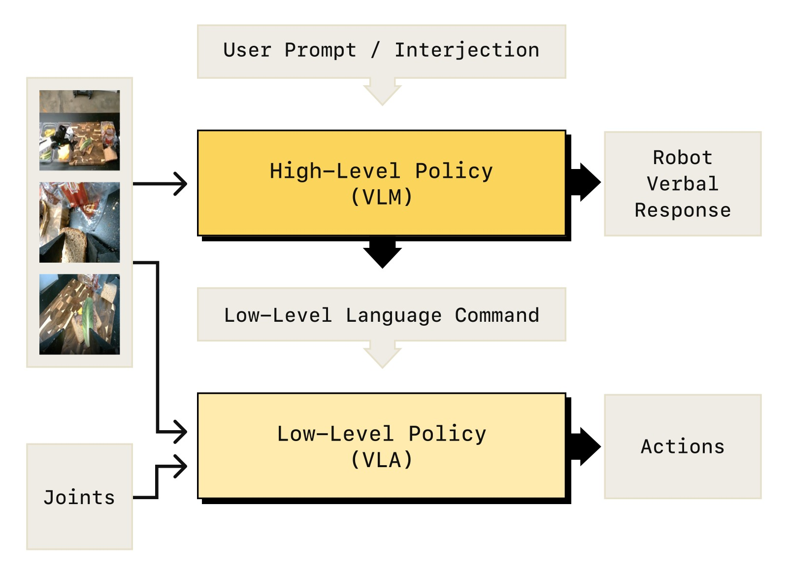
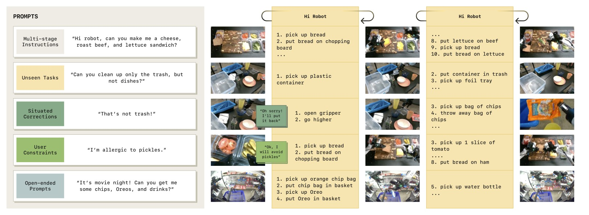
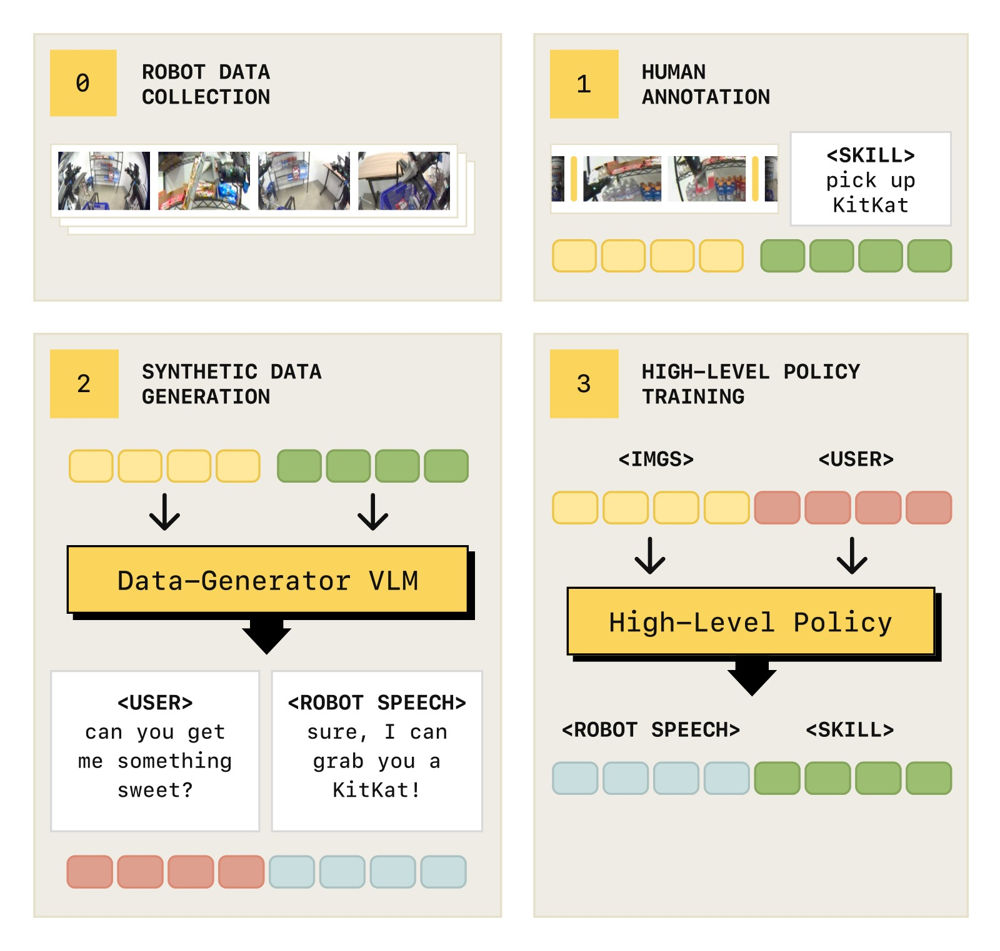
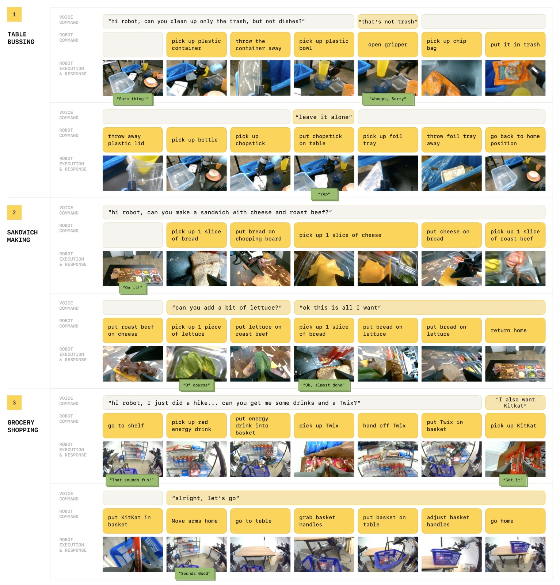
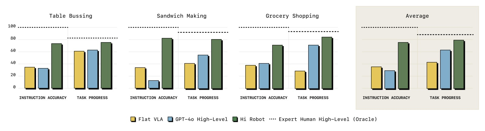
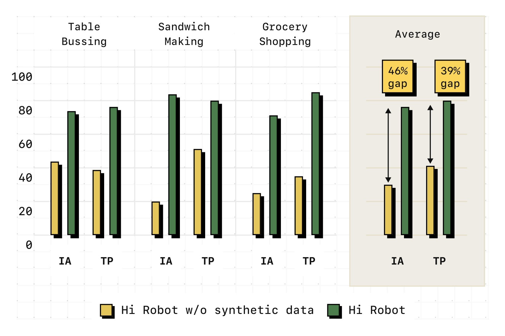
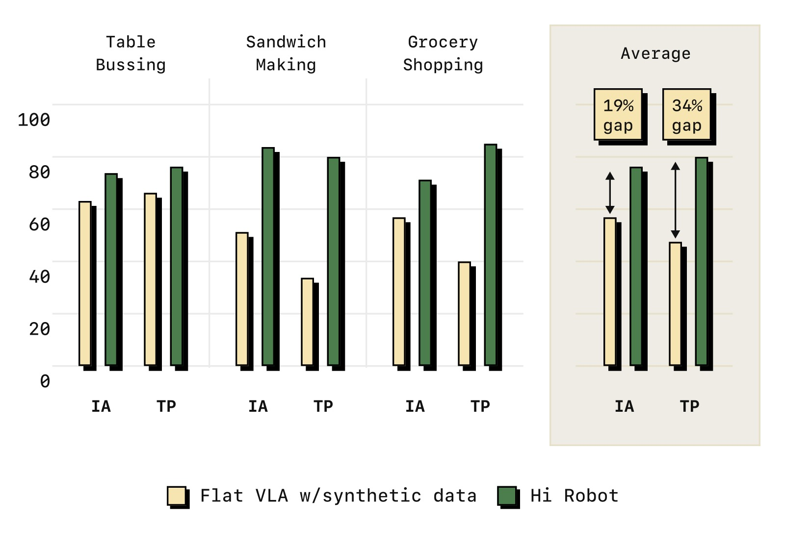
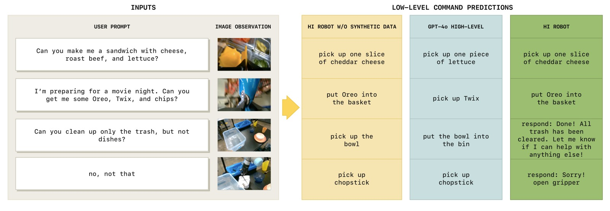

Hi Robot: Open-Ended Instruction Following with Hierarchical Vision-Language-Action Models
论文信息 - 作者：Lucy Xiaoyang Shi, Brian Ichter, Michael Equi, Liyiming Ke, Karl Pertsch, Quan Vuong, James Tanner, Anna Walling, Haohuan Wang, Niccolo Fusai, Adrian Li-Bell, Danny Driess, Lachy Groom, Sergey Levine, Chelsea Finn - 通讯作者：research@physicalintelligence.company - 机构：Physical Intelligence, Stanford University, UC Berkeley - 投稿方向：ICML 2025 - arXiv ID：2502.19417 - 代码：未开源（论文中未提供代码仓库） - 项目主页：https://www.pi.website/research/hirobot
一、核心问题
当前 VLA 模型（如 π₀、RT-2、OpenVLA）虽然能遵循简单指令（"pick up the cup"），但面对真实世界中的复杂语言交互时完全无能为力。考虑以下场景：
- "能不能给我做一个素食三明治？最好不要加番茄。另外，如果你有火腿或烤牛肉，给我朋友单独做一个有肉的三明治。"
- 中途纠正："那不是垃圾，放回去"
- 动态约束："只收黄色的东西"
这些场景需要的能力远超"执行原子指令"——机器人需要：
- 解析复杂提示：理解组合语义、隐含约束、否定指令
- 实时融合反馈：在任务执行中动态调整行为
- 情境化推理：将语言反馈与视觉观测结合（"那不是垃圾"需要看到抓的是什么）
论文将此类比为 Kahneman 的 System 1 / System 2 认知模型：
- System 1（快、自动）：执行简单技能
- System 2（慢、推理）：解析复杂指令、理解反馈、决策下一步
现有方法只解决了 System 1 层面的问题。
二、核心思路 / 方法
2.1 Hi Robot 总体架构
Hi Robot 的核心设计是层次化 VLA 系统：高层 VLM 负责"想"，低层 VLA 负责"做"。
用户复杂指令 ℓ_t
│
▼
┌──────────────────────────────────────┐
│ 高层策略 π_hi (VLM) │
│ System 2: 解析复杂指令、用户反馈 │
│ ┌────────────────────────────────┐ │
│ │ 输入: 图像 I¹,...,Iⁿ + 指令 ℓ │ │
│ │ 输出: 中间语言指令 ĉ (1-3秒技能) │ │
│ │ + 可选语音回应 u │ │
│ └────────────────────────────────┘ │
│ 调用频率: 每 1 秒或收到用户输入时 │
└──────────────┬───────────────────────┘
│ ĉ_t ("pick up the lettuce")
▼
┌──────────────────────────────────────┐
│ 低层策略 π_lo (VLA) │
│ System 1: 将原子指令转化为动作 │
│ 输入: 图像 I¹,...,Iⁿ + 指令 ĉ + 状态 q │
│ 输出: 动作块 A_t = [a_t,...,a_{t+H-1}] │
│ 基于 π₀ (PaliGemma 3B + Flow Matching) │
│ 调用频率: 50Hz (高频控制) │
└──────────────┬───────────────────────┘
│
▼
机器人动作

图1：Hi Robot 层次化策略架构。高层 VLM 处理开放指令和图像（基座相机+腕部相机），生成低层语言指令 ĉ（如 "grasp the cup"）；低层 VLA 基于 π₀，使用 ĉ、图像和机器人状态，通过流匹配输出连续动作块。两者都基于 PaliGemma-3B 初始化——高层做 next-token prediction 输出文本，低层加 action expert 做 flow matching 输出动作。两个策略运行在不同频率：高层约 1Hz（或由用户输入触发），低层 50Hz。

图2：Hi Robot 的能力展示。它能够：(a) 遵循多阶段指令——如"清理只黄色物品"；(b) 实时适应纠正——用户说"那不是垃圾"后立即放回碗；(c) 完成未见过的长周期任务——如根据食谱要求制作三明治；(d) 在需要时做出语音回应——如确认理解用户的膳食偏好。
2.2 合成数据生成（关键创新）
训练高层 VLM 需要大量"复杂指令 → 原子技能"的配对数据，但人工标注这些数据的成本极高。Hi Robot 提出了一种可扩展的合成数据生成方案：
┌──────────────┐ ┌─────────────────────┐ ┌──────────────────────┐
│ 遥操作示范数据 │ ──► │ segment 为短技能 │ ──► │ D_labeled: │
│ D_demo │ │ ĉ ("pick lettuce") │ │ (ĉ, I¹,...,Iⁿ) 元组 │
└──────────────┘ └─────────────────────┘ └──────────┬───────────┘
│
▼
┌─────────────────────────┐
│ 大型 VLM p_gen 生成 │
│ 输入: 图像 + 技能标签 ĉ │
│ + 上下文历史 │
│ 输出: │
│ - 合成用户指令 ℓ │
│ "Can you add some │
│ lettuce for me?" │
│ - 机器人语音回应 u │
│ - 场景分类标签 │
└──────────┬──────────────┘
│
▼
┌─────────────────────────┐
│ D_syn: │
│ (ℓ, ĉ, u, I¹,...,Iⁿ) │
│ 覆盖多种场景类型: │
│ - 否定任务 (不要做X) │
│ - 情境纠正 (调整之前指令) │
│ - 特定约束 (饮食偏好等) │
└─────────────────────────┘

图3：高层策略训练数据的采集与生成流程。Step 1——人类遥操作员收集机器人示范数据，带有粗粒度语言标注（如 "make a sandwich"）。Step 2——将完整 episode 分割为 1-3 秒的短技能片段 ĉ_t（如 "pick up one piece of lettuce"），并启发式提取基本运动原语。Step 3——使用大型 VLM p_gen 为每个 (图像, 技能标签) 对，合成可能的用户指令 ℓ（如 "Can you add some lettuce for me?"）、机器人语音回应 u，以及场景类型标签。p_gen 利用视觉上下文和世界知识生成多样化交互——例如在制作三明治时推断出饮食约束（"我乳糖不耐受"→ "好的，我不放奶酪"），在购物场景中推断隐含请求（"我想要甜的"→ 建议巧克力或糖果）。为保持多步任务的一致性，p_gen 还接收先前的技能标签历史 ĉ_0,...,ĉ_{t-1}，生成符合任务进展的连贯指令。
这一设计的精妙之处：
- 零人工标注成本：仅需对演示数据做一次 skill segmentation，其余全靠 VLM 自动生成
- 利用了 VLM 的世界知识：模型可以推断饮食约束（"lactose intolerant" → 不放奶酪）、推理隐含偏好（"something sweet" → 巧克力）
- 结构化分类保证多样性：通过场景类型（否定任务、情境纠正、特定约束）和回应类型（确认、澄清、错误处理）的分类标签，引导生成多样化交互
- 上下文一致性：条件化于先前的技能标签历史，确保多步交互的连贯性
2.3 训练
- 高层策略：PaliGemma-3B → 在 $D_{syn} \cup D_{labeled}$ 上做 next-token prediction 微调
- 低层策略：PaliGemma-3B → π₀ 的 flow matching VLA，在 $D_{labeled} \cup D_{demo}$ 上训练
- 高层训练效率：8×H100，约 2 小时
2.4 实时推理
- 高层 VLM 推理：每 1 秒一次，或在用户发言时触发
- 低层 VLA 推理：50Hz 高频控制（通过 action chunking，每 0.5-0.8 秒推理一次）
- 使用 Whisper large-v2 做语音转文字，Cartetia API 做文字转语音
- 推理硬件：1-2 块 NVIDIA RTX 4090
三、实验与结果
3.1 任务设置
三个复杂领域：
| 任务 | 机器人 | 挑战 |
|---|---|---|
| Table Bussing (清理桌子) | UR5e 单臂 | 区分垃圾/餐具；语义约束 ("只收黄色东西")；动态纠正 ("那不是垃圾") |
| Sandwich Making (制作三明治) | ARX 双臂 | 灵巧操作食材；饮食约束 ("素食"、"对泡菜过敏")；中途停止 ("够了，不要更多") |
| Grocery Shopping (杂货购物) | Mobile ARX 双臂移动 | 移动操作；模糊语义 ("给我拿点甜的")；数量推理 ("给我 Twix 和 Skittles") |

图4：三个评估任务域的概览。(a) Table Bussing——UR5e 单臂清理桌子，将垃圾放入垃圾桶、餐具放入碗篮。评估包括复杂约束提示（"只收垃圾不收餐具"、"收所有黄色的东西"）和即时纠正（"那不是垃圾"、"这个不用收"）。(b) Sandwich Making——ARX 双臂制作三明治，使用最多 6 种配料+面包。评估包括组合请求（"做一个有奶酪、烤牛肉、生菜的三明治"）、约束（"素食"、"对泡菜过敏"）、中途纠正（"够了"）。(c) Grocery Shopping——Mobile ARX 双臂移动机器人从货架挑选商品放入篮子。评估包括模糊语义（"拿点甜的"、"拿点喝的"）、具体品牌（"拿 Twix 和 Skittles"）、中途追加（"我还要 KitKat"）。
3.2 主要结果对比

图5：Hi Robot 与 GPT-4o（SayCan 式 VLM 高层的升级版）、Flat VLA（无高层的 π₀）的定量对比。在三个任务上分别评估指令准确率（IA）和任务进度（TP），每任务 20 次试验。Hi Robot 在所有 6 个指标上全面领先：(1) IA 比 GPT-4o 平均高 40% 以上——GPT-4o 虽然模型更大但缺乏物理 grounding，常输出无意义指令（如 "pick up bermuda triangle"）或将所有物体标记为 "plate"；(2) Flat VLA 无法处理复杂多阶段指令和实时反馈；(3) Expert Human 高层作为 oracle 基线，展示了低层策略的物理能力上限——Hi Robot 正接近这一上限。
关键发现：
(1) Hi Robot 在开放指令遵循上远超基线：
- 正确识别并处理约束（"不加番茄"、"素食"、"只收黄色东西"）
- GPT-4o 在物理交互开始后失去上下文，发出无意义指令
- Flat VLA 本质上无法处理复杂指令
(2) 强情境推理和实时反馈适应：
- 用户中途修改请求（"够了"、"我还要 KitKat"）时，Hi Robot 立即调整低层指令
- GPT-4o 无法维持一致的内部状态：在夹爪仍被占用时命令捡新物体，或过早切换任务
- Flat VLA 完全不响应实时反馈
(3) 跨任务、跨机器人、跨约束有效：
- 在单臂、双臂、移动双臂平台上均有效
- 处理从易碎奶酪片到高瓶子的各种物体
- 遵守动态约束（"不加番茄"、"只收垃圾"）
3.3 消融实验
(A) 合成数据的关键作用

图6：去除合成数据的消融结果。仅使用人工标注数据（无 D_syn）训练的高层策略，在指令准确率（IA）和任务进度（TP）上均大幅下降。具体表现：忽略澄清（"这不是垃圾"）、包含禁止项（泡菜）、缺乏对组合式语言的理解。合成数据提供的"否定任务"、"情境纠正"、"具体约束"等多样化交互场景，是模型获得灵活语言理解能力的关键。
(B) 层次结构 vs 平坦策略

图7：层次化 vs 平坦策略的消融。即使使用相同的训练数据（含合成数据），Flat VLA 的性能也远不如层次化的 Hi Robot。原因：平坦策略一次处理整个任务，容易退化为默认行为（清空所有物品、"收所有东西"），无法在每步重新检查提示中的约束条件。而 Hi Robot 的高层在每个时间步重新生成中间指令，有效地将全局约束传播到每个局部决策中。
3.4 定性对比

图8：高层指令生成的定性对比。(a) GPT-4o 经常错误识别物体（将一切标记为 "plate" 或 "spoon"），导致低层执行完全错误的行为；(b) GPT-4o 跳过了任务——忽略了用户"不加番茄"的约束，仍然指令拿取番茄；(c) GPT-4o 忽略用户意图——用户说"只收垃圾"，但 GPT-4o 仍指令收取餐具。相比之下，Hi Robot 持续生成与机器人动作和用户请求对齐的指令。无合成数据的消融版本对齐视觉观测良好（看到什么说什么），但忽略了用户约束。
四、关键洞察与技术亮点
4.1 System 1 / System 2 的 VLA 实现
这是论文最核心的概念贡献。与认知科学中 Kahneman 的双过程理论的精确对应：
- System 1（低层 VLA）：快速、自动、基于模式识别——看到"pick up the cup"直接输出动作
- System 2（高层 VLM）：缓慢、深思熟虑、需要推理——解析"做一个素食三明治，不要番茄"→ 推断需要哪些配料 → 依次下达各步原子指令
两个系统使用几乎相同的模型架构（都是 PaliGemma-3B），区别仅在于输出格式（文本 vs 流匹配动作）。这种统一性暗示未来可以将两个角色合并到一个模型中。
4.2 合成数据的"倒推生成法"
传统上，我们收集"指令→技能"的配对数据。Hi Robot 反其道而行——先有技能标签，再倒推出"什么样的指令可能会产生这个技能"。这类似于 LLM 训练中的"逆向指令生成"技术，但在具身场景中通过视觉条件化变得更加复杂。
4.3 语言作为中间表示层
Hi Robot 的高层和低层之间使用自然语言作为接口（ĉ_t），而不是某种隐式向量。这带来了重要优势：
- 可解释性：可以检查高层输出了什么指令
- 可调试性：可以人工替换高层输出来诊断低层问题
- 模块化：高层和低层可以独立升级和替换
4.4 物理 grounding 对高层推理的必要性
GPT-4o 作为一个更强大的 VLM，在 Hi Robot 框架中的表现反而很差——因为它没有被针对机器人 affordance 进行微调。多模态能力本身不足以实现物理 grounding——模型需要看到过机器人执行这些技能的例子才能正确调用。
五、局限性
- 缺乏长程记忆：当前系统不维护长时间记忆，难以处理需要回忆历史指令的复杂推理
- 高低层独立训练：两个模型对彼此的能力没有明确认知——高层不知道低层实际能执行哪些技能
- Prompt engineering 依赖：合成数据生成质量依赖于精细的 prompt 工程
- 对象偏好偏差：低层策略有时偏向靠近夹爪的物体（如忽略"乳糖不耐受"约束去抓奶酪），训练数据中的分布偏差影响行为
- 无出错恢复：掉落的物体等 OOD 情况无法恢复
- 未开源模型权重：论文未提供训练好的模型 checkpoint
六、关键概念速查
| 术语 | 解释 |
|---|---|
| Hi Robot | Hierarchical Interactive Robot system，本文提出的层次化人机交互系统 |
| π_hi / 高层策略 | 基于 VLM 的 System 2 推理层，将复杂指令分解为原子技能 |
| π_lo / 低层策略 | 基于 VLA（π₀）的 System 1 执行层，将原子技能转为动作 |
| System 1 / System 2 | Kahneman 的认知双过程模型：快直觉 vs 慢推理 |
| ĉ_t / 中间语言指令 | 高层输出给低层的原子指令（1-3秒的技能描述） |
| D_syn / 合成数据 | 用大型 VLM 从 (图像, 技能标签) 对逆向生成的多样的交互数据 |
| D_labeled | 人类将演示数据 segment 为短技能标签得到的标注数据集 |
| PaliGemma-3B | 两者共用 VLM 骨干（高层做 NLP，低层加流匹配输出动作） |
| Whisper | OpenAI 语音识别模型，用于将用户语音转为文本输入 |
| 情境化 grounding | 将语言反馈与当前视觉观测结合的能力（如 "that's not trash" 需要看到抓的是什么） |
| 指令准确率 (IA) | 高层策略预测的指令是否符合用户意图和当前观测 |
| 任务进度 (TP) | 正确操作的对象占总需要操作对象的比例 |
七、推理调用流程
用户说: "Can you make me a vegetarian sandwich? No tomatoes please."
│
▼
┌─────────────────────────┐
│ Whisper: 语音 → 文本 │
│ ℓ = "make vegetarian │
│ sandwich, no tomato"│
└────────────┬────────────┘
│
▼
┌─────────────────────────┐
│ 高层 VLM 推理 (~60ms) │
│ │
│ 观察: 面包、生菜、奶酪、 │
│ 火腿、番茄在工作台上 │
│ 推理: "素食 → 不放火腿" │
│ "不要番茄" │
│ 输出: ĉ = "pick up one │
│ slice of bread" │
│ u = "Sure, I'll │
│ make a vegetarian │
│ sandwich, no │
│ tomatoes!" │
└────────────┬────────────┘
│
▼
┌─────────────────────────┐
│ 低层 VLA 推理 (~73ms) │
│ 输入: ĉ + 图像 + 关节角 │
│ 通过流匹配输出 50 步动作 │
│ 执行: 移动到面包位置 → │
│ 抓取一片面包 │
└────────────┬────────────┘
│
▼
┌─────────────────────────┐
│ 1 秒后，高层再次推理: │
│ ĉ = "pick up lettuce" │
│ → 抓取生菜 │
│ 再过 1 秒: │
│ ĉ = "pick up cheese" │
│ → 抓取奶酪 │
│ ...直到三明治完成 │
└─────────────────────────┘
│
┌─ 如果用户中途打断 ────────┐
│ "that's too much cheese" │
│ → 高层推理: stop current │
│ action, adjust amount │
│ → 低层: 放回多余奶酪 │
└─────────────────────────┘
八、与相关方法的对比
高层推理能力
▲
│
Hi Robot (本文) │ ★ 端到端 VLM 微调
(VLM+VLA, │ (高层+低层都是 VLM)
合成数据训练) │
│
│ GPT-4o 高层
│ (API VLM, 大但无
│ 物理 grounding)
│
│ SayCan / Code-as-Policies
│ (LLM 规划 + 预定义技能)
│
│
Flat VLA (π₀, RT-2) │ VoxPoser / MOKA
(无高层，单步指令) │ (VLM 参数化技能,
│ 无实时语言交互)
│
└──────────────────────────────►
低层灵巧性 / 物理能力
Hi Robot 的独特位置：高层推理 + 低层灵巧性的真正融合。之前方法要么只有其中一侧，要么两侧的连接过于薄弱。
笔记生成日期：2026-05-14